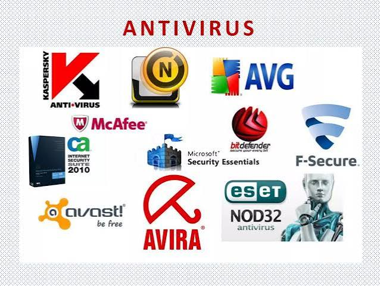
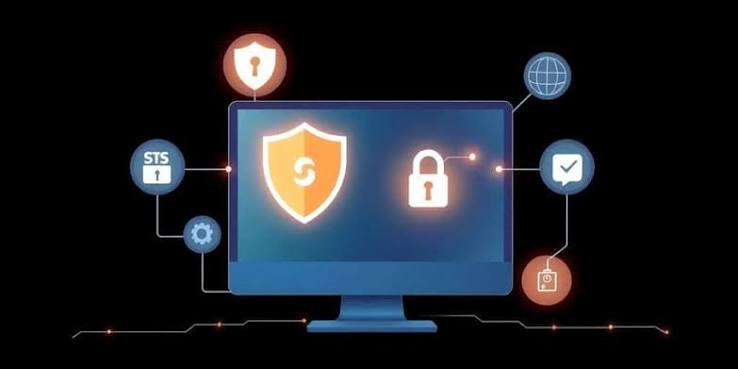

Introducción
Actualmente utilizamos computadoras, celulares y otros dispositivos para estudiar, trabajar, comunicarnos y guardar información. Por eso, es importante contar con herramientas que ayuden a protegerlos frente a diferentes amenazas informáticas.
Los antivirus son programas creados para ayudar a detectar, prevenir y eliminar software malicioso que puede afectar a nuestros dispositivos. En esta página conoceremos qué son los antivirus, cuáles son sus características, cómo funcionan, cuáles son sus ventajas y desventajas y por qué son importantes para la seguridad informática.
¿Qué es un antivirus?
Un antivirus es un programa de seguridad diseñado para detectar, bloquear y eliminar diferentes tipos de software malicioso, como virus, troyanos, spyware y otros tipos de malware.
Los antivirus analizan los archivos y programas de un dispositivo para identificar comportamientos o características que puedan representar una amenaza. Cuando encuentran un elemento sospechoso, pueden bloquearlo, ponerlo en cuarentena o eliminarlo, dependiendo de la situación.

Características
- Detección de amenazas: buscan programas o archivos que puedan ser peligrosos.
- Protección en tiempo real: algunos pueden analizar lo que ocurre en el dispositivo mientras se utiliza.
- Análisis del sistema: permiten revisar archivos, programas y diferentes partes del dispositivo.
- Eliminación o aislamiento: pueden eliminar una amenaza o colocarla en cuarentena para evitar que cause daños.
- Actualizaciones: reciben nuevas definiciones y mejoras para reconocer amenazas recientes.
- Protección durante la navegación: algunos pueden advertir sobre sitios web o archivos que podrían ser peligrosos.
Ventajas y Desventajas
Ventajas
- Ayudan a detectar y eliminar software malicioso.
- Pueden proteger información almacenada en el dispositivo.
- Algunos ofrecen protección en tiempo real.
- Pueden analizar archivos antes de que sean utilizados.
- Ayudan a reducir el riesgo de infecciones informáticas.
- Contribuyen a mantener los dispositivos más seguros.
Desventajas
- Algunos antivirus pueden utilizar parte de los recursos del dispositivo.
- Necesitan actualizarse para reconocer amenazas nuevas.
- Ningún antivirus garantiza una protección absoluta.
- Algunas funciones avanzadas pueden estar disponibles solamente en versiones de pago.
- Un antivirus no reemplaza los buenos hábitos de seguridad del usuario.

Funcionamiento
El antivirus analiza los archivos, programas y actividades del dispositivo en busca de posibles amenazas. Para identificarlas puede utilizar diferentes métodos, como comparar archivos con información sobre amenazas conocidas y analizar comportamientos sospechosos.
Cuando detecta una amenaza, puede mostrar una advertencia y permitir que el usuario decida qué hacer. Según el caso, el archivo puede ser bloqueado, eliminado o enviado a una cuarentena, donde queda aislado para evitar que afecte al resto del sistema.
Para mantenerse actualizado, el antivirus recibe nuevas definiciones y mejoras que le permiten reconocer amenazas más recientes.
Los antivirus se utilizan principalmente para proteger dispositivos y la información que contienen. Pueden encontrarse en computadoras, celulares y otros equipos que necesitan protección frente a programas maliciosos.
También son utilizados en empresas, escuelas y hogares para reducir los riesgos relacionados con la seguridad informática.
- Microsoft Defender: herramienta de seguridad incluida en Windows.
- Avast: ofrece diferentes funciones de protección para dispositivos.
- AVG: cuenta con herramientas para detectar diferentes amenazas.
- Bitdefender: ofrece soluciones de seguridad para distintos dispositivos.
- ESET: proporciona herramientas para detectar y prevenir amenazas informáticas.
Tabla comparativa
| Característica | Windows Defender | Avast |
|---|---|---|
| Protección en tiempo real | Sí | Sí |
| Análisis del sistema | Sí | Sí |
| Protección contra malware | Sí | Sí |
| Actualizaciones | Automáticas | Automáticas |
| Integración con Windows | Alta | Compatible |
Conclusión
Los antivirus son herramientas importantes para la seguridad informática, ya que ayudan a proteger nuestros dispositivos y la información que almacenamos en ellos. Su función principal es detectar, bloquear y eliminar diferentes tipos de software malicioso.
Sin embargo, utilizar un antivirus no significa que estemos completamente protegidos. También es necesario mantener los programas actualizados, tener cuidado con los archivos que descargamos, evitar abrir contenido desconocido y utilizar Internet de manera responsable.
En conclusión, los antivirus son una herramienta fundamental para reducir los riesgos informáticos y mantener nuestros dispositivos más seguros. Conocer cómo funcionan y utilizarlos correctamente nos permite aprovechar la tecnología de una forma más segura y responsable.